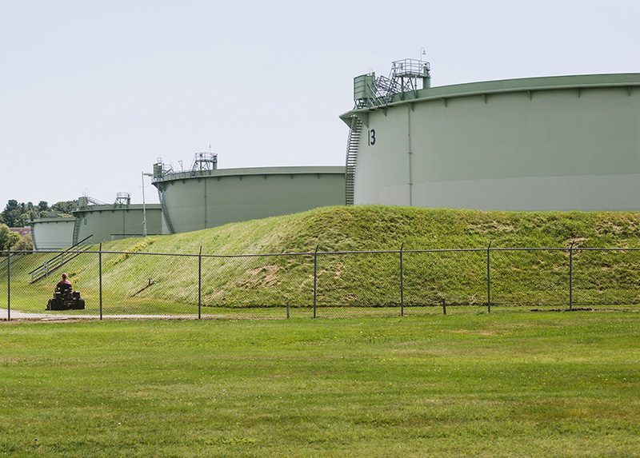
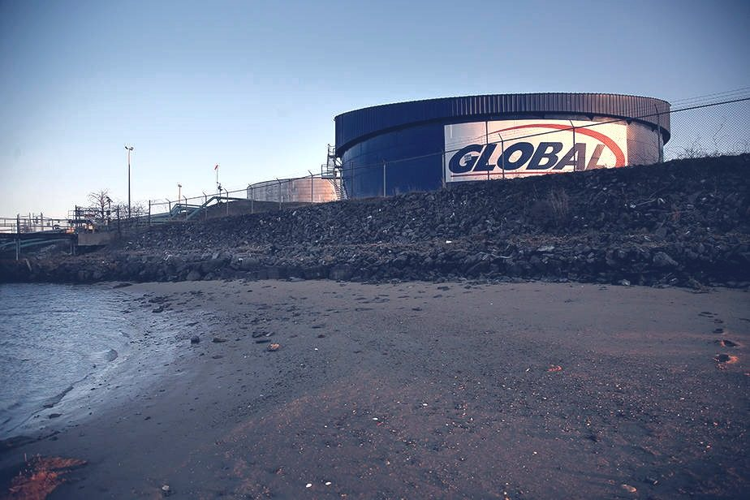
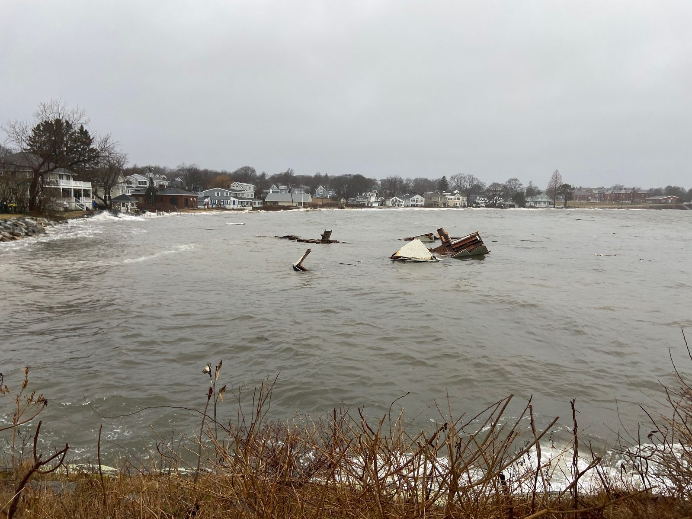

Protect South Portland’s focus is returning to the tanks and the emissions — what residents at the fence line have felt and smelled for years, and what the new fence-line data now confirms.

120 large petroleum tanks run by six major companies. Fence-line data confirms the air exceeds state standards for benzene. Bring the tanks back to the center of the conversation — see the map and the Oct. 27 City Council workshop.
SEE THE MAP →
Protect South Portland is calling on the Maine and federal governments to do more to hold big air polluters accountable.
LEARN MORE →
Protect South Portland is learning about our city's vulnerabilities so that we can move toward resilient and sustainable solutions.
LEARN MORE →The Clear Skies Ordinance bans the loading of crude oil onto tankers in South Portland's harbor. The process of loading crude oil, especially crude derived from tar sands, is accompanied by the emission of toxic chemicals.
LEARN MORE →Protect South Portland is working with the City to pass a companion to our pesticide ordinance: a ban on synthetic fertilizers.
LEARN MORE →Protect South Portland played an important role in mobilizing support for a groundbreaking ordinance regulating pesticide use in the City of South Portland, Maine.
LEARN MORE →A large-scale residential development is proposed next to Bug Light Park in the Shipyard district. PSP has grave health and safety concerns before any zoning change is considered.
Yard South Proposal